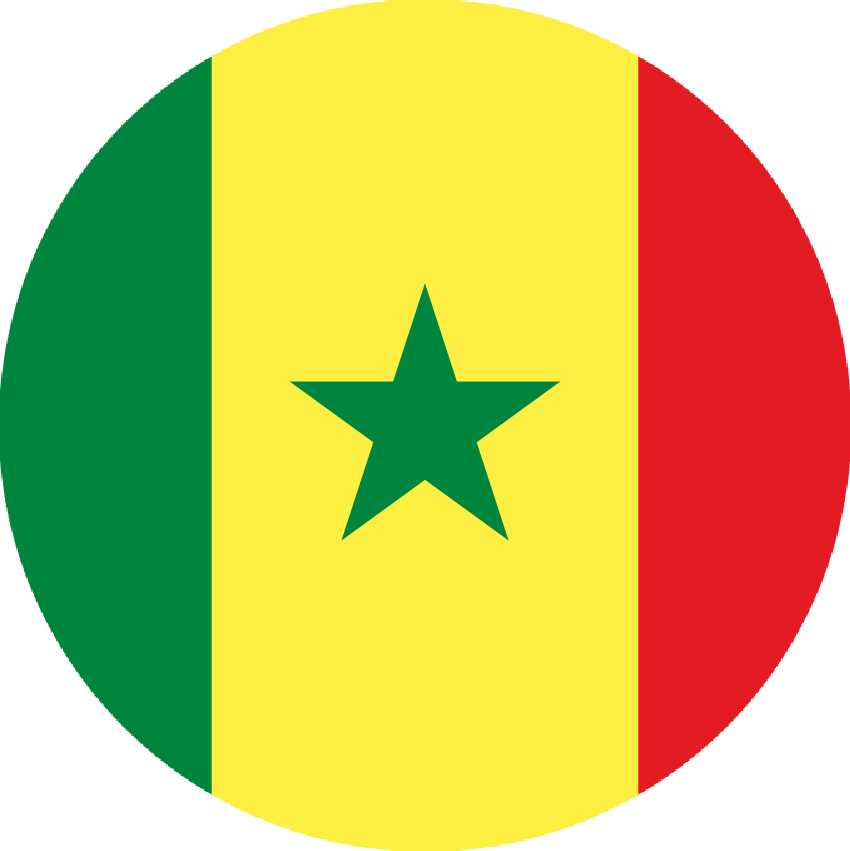
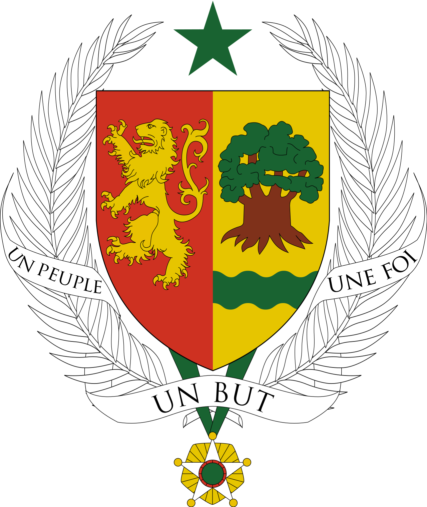
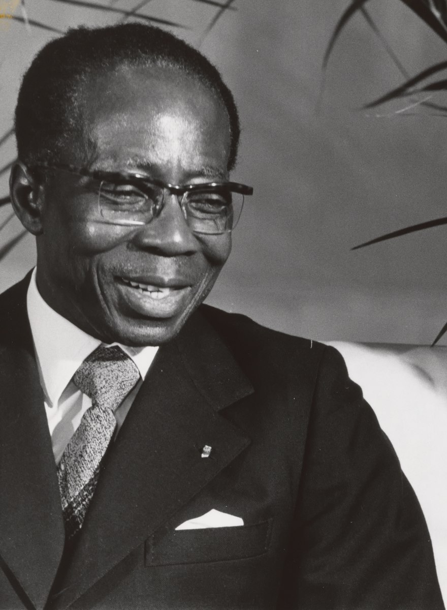
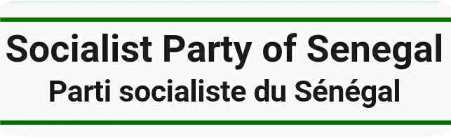
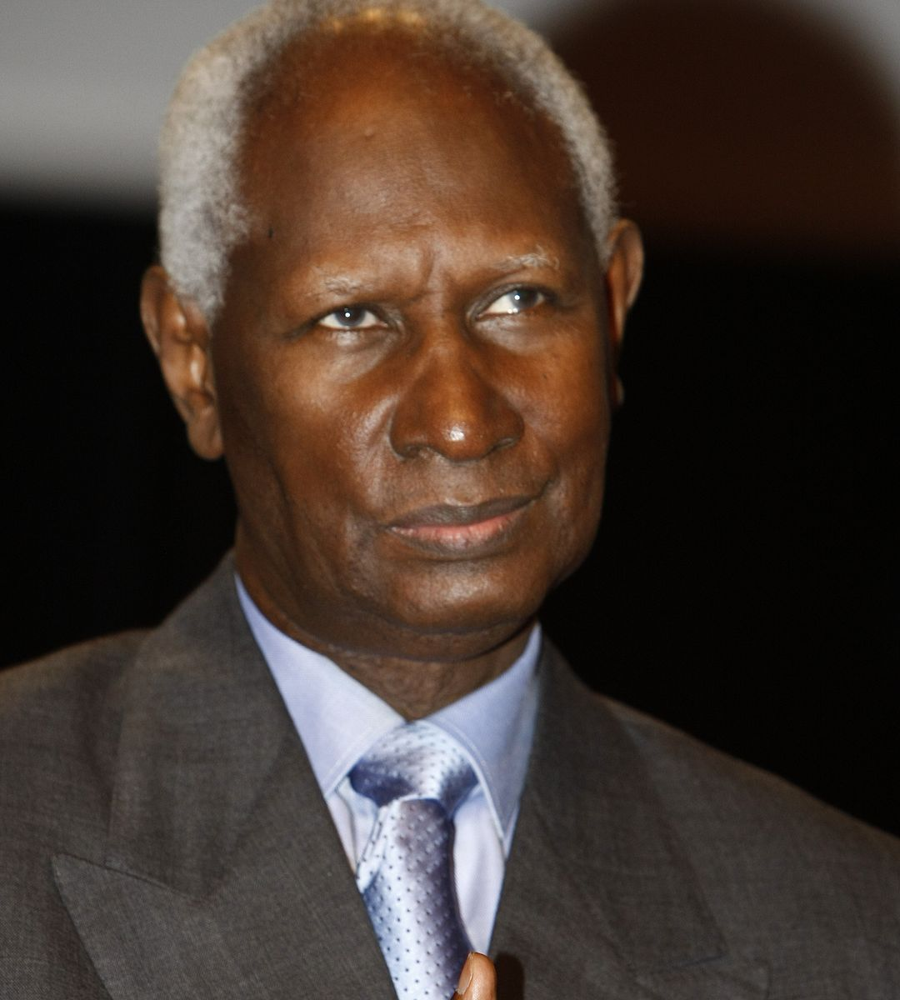
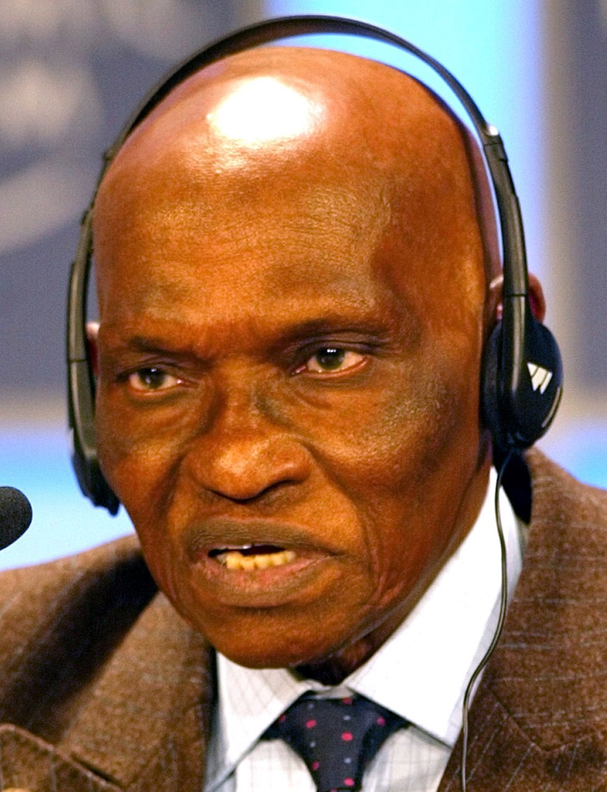
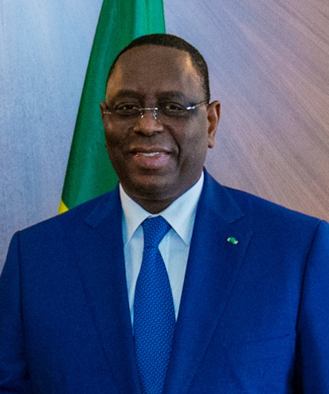

REPUBLIC OF SENEGAL


"One People, One Goal, One Faith"
FIRST PRESIDENT


- Léopold Sédar Senghor
- Political Party P.S.
- In Office From: 6 September 1960.
- In Office until: 31 December 1980.
- Born: 9 October 1906.
- Died: 20 December 2001.
- Aged: 95 years Old.
SECOND PRESIDENT

- Abdou Diouf
- Political Party P.S.
- In Office From: 1 January 1981.
- In Office Until: 1 April 2000.
- Born: 7 September 1935.
- Aged: 88 Years Old.
THIRD PRESIDENT


- Abdoulaye Wade.
- Political Party P.D.S.
- In Office From: 1 April 2000.
- In Office Until 2 April 2012
- Born: 29 May 1926.
- Aged:97 Years Old.
FOURTH PRESIDENT

lncumbent President
- Macky Sall.
- Political Party A.P.R.
- In Office From: 2 April 2012.
- In Office Until: Present.
- Born: 11 December 1961.
- Aged: 61 Years Old.